100개를 줄 세운 기준과 동네 사장님 업무 자동화
창업을 해도 오래 버티는 곳은 생각보다 적어요. 발표자가 첫 화면에 띄운 막대를 보면, 2019년에 생긴 회사 100곳 중 5년 뒤에도 문을 연 곳은 36.5곳이고 63.5곳은 닫았어요.
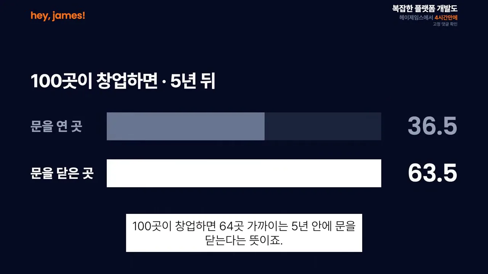
그래서 100개 아이템을 '돈이 들어오는 속도' 순서로 세웠어요. 기준은 누가 돈을 내느냐예요. 앞쪽 30개는 사장님·회사·전문가가 내서 한 명만 설득해도 다음 달에 돈이 들어와요. 가운데는 개인이 내고, 맨 뒤 플랫폼은 사람이 많이 모여야 첫 거래가 생겨요. 영상이 다루는 열 묶음을 한 장에 그리면 이래요.
① 동네 사장님 업무 자동화 (1~10번)
첫 묶음은 동네 가게나 작은 회사 사장님이 돈을 내요. 사장님이 매일 30분씩 쓰는 일을 대신해 주면 그게 아이템이 돼요. 화면 속 큰 숫자 613만 곳이 2024년 기준 소상공인 수이고, 아래 작은 글씨가 한 곳에 평균 1.57명이 일한다는 뜻이에요. 사장님 혼자 장사도 하고 장부도 쓰고 리뷰 답글도 단다는 거죠.
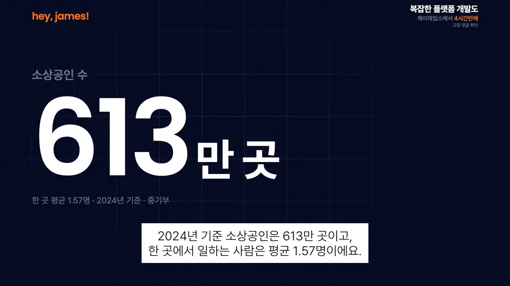
그럼 이런 일을 AI로 줄이는 곳은 얼마나 될까요? 2024년 조사에서 AI를 쓰는 중소기업은 28.7%, 대기업은 48.8%였어요. 막대 길이 차이가 곧 빈자리예요.
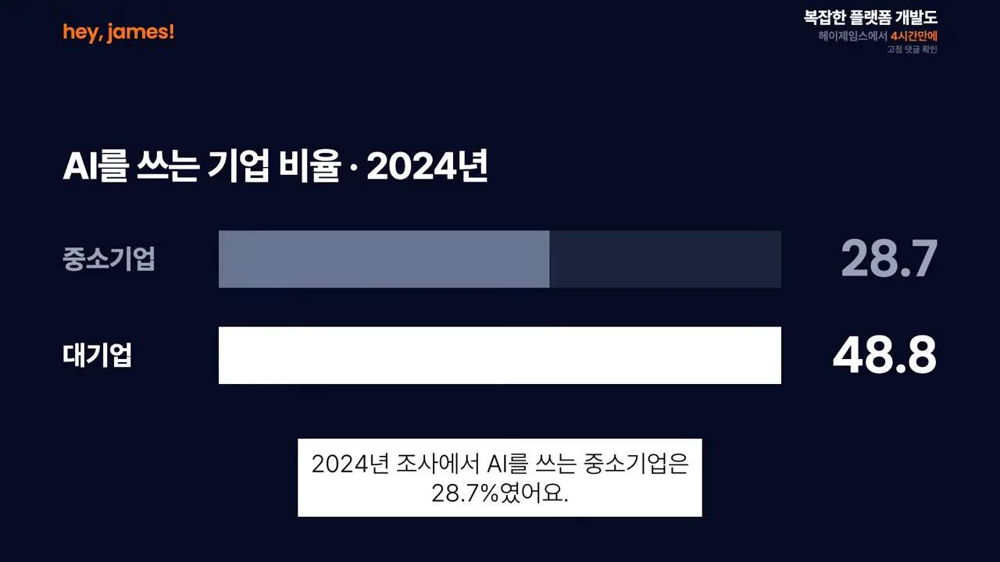
영상이 자세히 고른 건 두 개예요. 3번 리뷰 답글 AI는 배달앱이나 지도 앱 리뷰를 읽고 가게 말투로 답글 초안을 써 줘요. 리뷰에 답하던 시간을 줄여 주고 월 구독으로 받아요. 10번은 정부지원사업 공고를 우리 가게 업종에 맞춰 골라 주고 신청서 초안까지 써 주는 도구예요. 공고는 많은데 장사하면서 다 읽을 시간이 없으니까요. 열 개 전체는 이래요(굵은 글씨가 영상이 자세히 다룬 아이템이에요).
| 번호 | 아이템 | 번호 | 아이템 |
|---|---|---|---|
| 1 | 영수증 사진으로 장부 정리 | 6 | 회의 녹음을 할 일 목록으로 |
| 2 | 원천세·부가세 납부 일정 알림 | 7 | 쇼핑몰 문의 자동 답변 |
| 3 | 리뷰 답글 AI | 8 | 식자재 발주 예측 |
| 4 | 업종별 견적서·계약서 생성기 | 9 | 5인 미만 사업장 급여 계산 |
| 5 | 채용 공고 작성과 지원자 선별 | 10 | 지원사업 공고 매칭과 신청서 초안 |
2주 안에 시험하는 방법도 화면에 네 칸으로 나와요. 사장님 열 분을 찾고, 손으로 먼저 해 드리고, 돈을 받아 보고, 그다음에 만들어요. 앱은 맨 마지막 칸이에요.
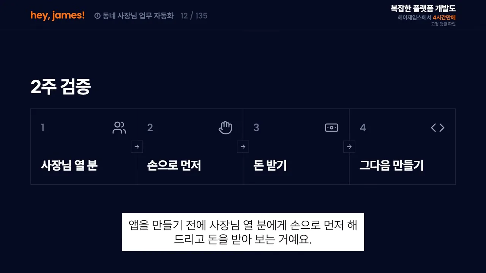
회사와 전문가가 돈을 내는 묶음
② 회사 대상 개발·데이터 서비스 (11~20번)
두 번째 묶음은 회사가 돈을 내요. 결제하는 쪽이 회사라서 한 번에 받는 금액이 커요. 13번은 직원이 엑셀 파일 세 개를 오가며 하던 일을 웹 화면 하나로 옮기는 일이에요. 주문은 이 파일, 재고는 저 파일, 정산은 또 다른 파일에 있는 회사라면, 담당자가 휴가를 갔을 때 아무도 그 파일을 못 다뤄요. 화면 하나로 옮기면 누가 들어와도 같은 순서로 일할 수 있어요.
11번은 회사 업무에 맞춘 AI 에이전트를 만들어 주는 일이에요. 화면의 네 칸이 예시 흐름이에요. 문의 메일이 들어오면 AI가 읽고, 견적서 초안을 쓰고, 마지막 칸에서 담당자가 확인해요.
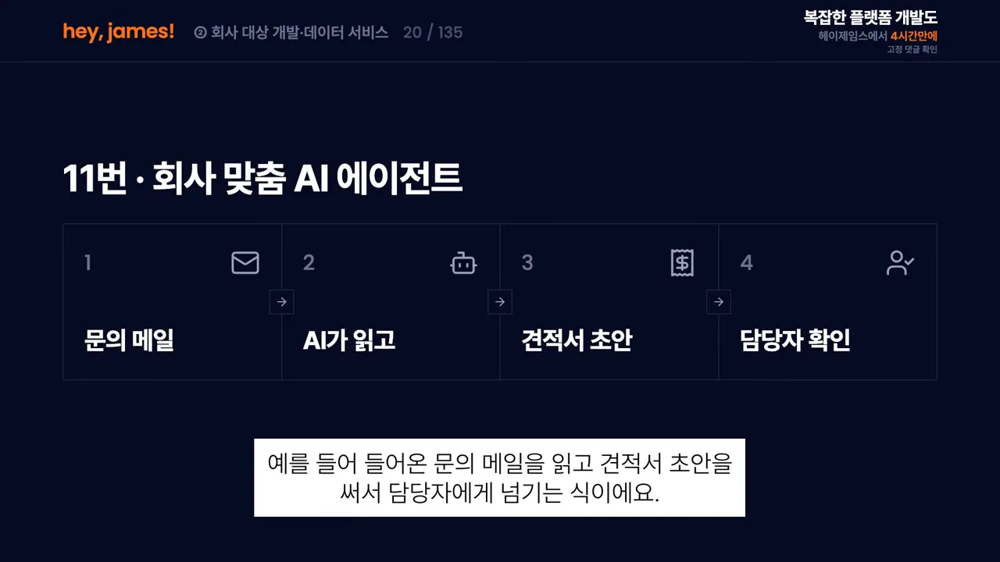
첫 고객은 내가 일했던 회사, 아는 대표님 회사부터 찾으라고 해요. 한 회사의 일을 줄여 준 결과 화면이 다음 회사를 설득하는 가장 좋은 자료가 되거든요.
발표자는 이 묶음을 직접 해 봤어요. 시간 단위로 개발을 파는 'CTO(Chief Technology Officer) 대여'였는데, 화면의 세 숫자처럼 하루 100만 원, 한 달 2천만 원, 1년에 2억 원 넘게 벌었다고 해요.
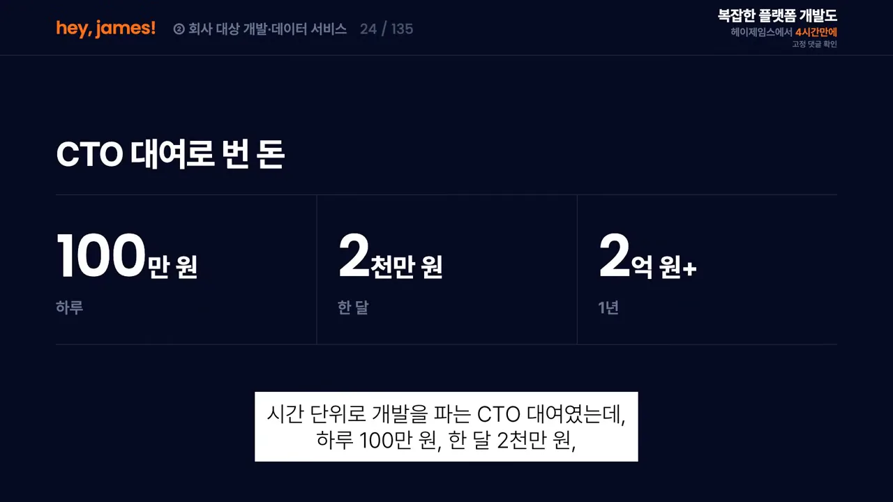
혼자서 이게 가능해진 이유는 다음 화면의 비교예요. 왼쪽 '예전 외주'는 수천만 원에 6개월~1년, 오른쪽 'AI로 혼자'는 같은 규모를 하루에 만든다고 적혀 있어요.
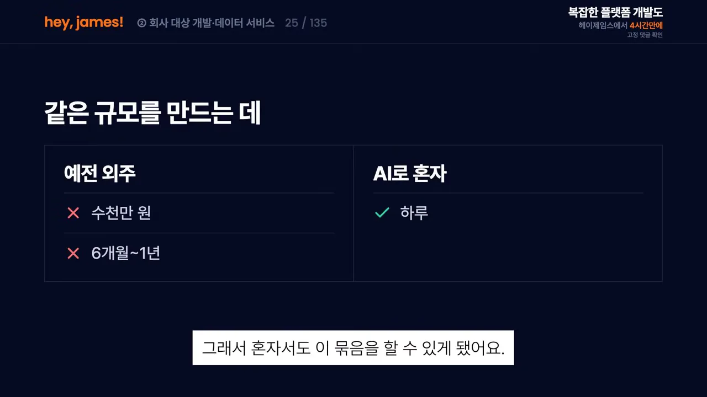
③ 전문직 전용 AI 도구 (21~30번)
세 번째 묶음은 한 사람이 돈을 내는데, 그 사람이 시간당 수만 원을 버는 전문가예요. 전문직은 시간이 곧 돈이라서 시간을 줄여 주면 바로 결제해요. 22번은 세무사 사무실을 위한 고객 서류 수집 도구예요. 세 칸을 따라가 보면, 고객이 사진을 올리면 항목별로 나눠 담고 빠진 서류만 다시 알려 줘요.
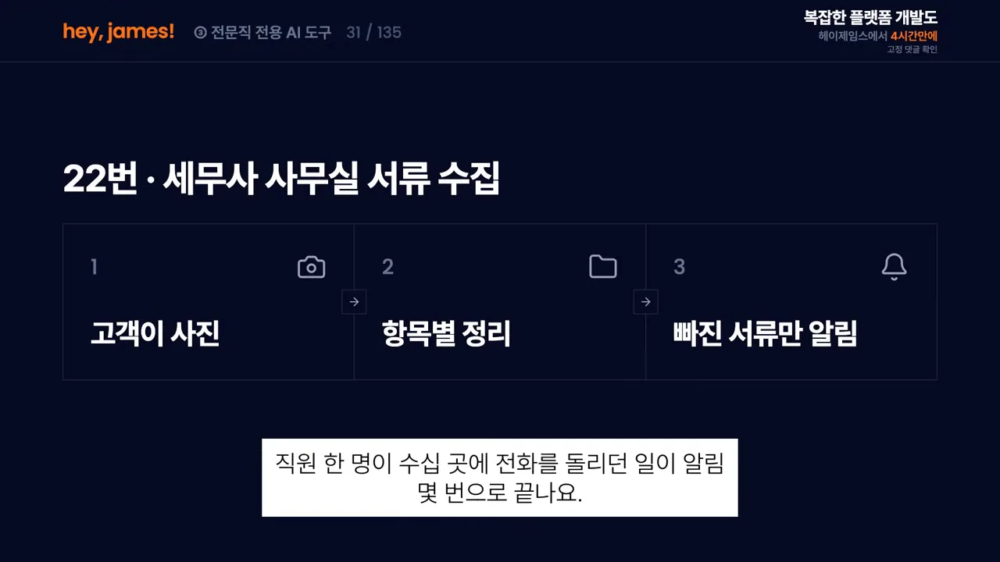
28번은 학원 원장님이 학부모 상담 전에 쓰는 리포트예요. 출결, 숙제, 시험 점수를 모아 한 장으로 정리해 주면 원장님은 그 한 장을 보며 상담만 하면 돼요.
이런 도구는 그 직업에서 일해 본 사람이 만들면 유리해요. 학원에서 일해 본 사람은 상담 전에 뭘 챙기는지 알고, 세무사 사무실에서 일해 본 사람은 독촉 전화를 몇 통이나 돌리는지 알아요. 그래서 첫 화면부터 실제로 쓰는 순서대로 만들 수 있고, 같이 일한 동료가 첫 고객이 돼요.
두 묶음의 스무 개를 모으면 이래요.
| 번호 | 회사 대상 | 번호 | 전문직 대상 |
|---|---|---|---|
| 11 | 회사 맞춤 AI 에이전트 | 21 | 노무사의 근로계약서 검토 |
| 12 | 사내 문서 검색 챗봇 | 22 | 세무사 사무실 고객 서류 수집 |
| 13 | 엑셀 업무를 웹 화면으로 | 23 | 변호사의 판례 요약·서면 초안 |
| 14 | 쇼핑몰 매출 대시보드 | 24 | 공인중개사 매물 광고 문구 |
| 15 | 공공데이터를 가공해 파는 API(Application Programming Interface) | 25 | 병의원 예약 문자 |
| 16 | 회사 홈페이지 리뉴얼 | 26 | 약국 복약 안내문 |
| 17 | 내부 관리 도구 제작 | 27 | 인테리어 견적 산출기 |
| 18 | 중소기업 개인정보 보안 점검 | 28 | 학원 학부모 상담 리포트 |
| 19 | 앱 출시 전 테스트 대행 | 29 | 보험설계사 보장 분석 리포트 |
| 20 | 기업 교육용 시뮬레이션 게임 | 30 | 통번역사 용어집 관리 |
개인이 미리 돈을 내는 교육과 크리에이터 도구
여기서부터는 개인이 돈을 내요. 31번부터 90번까지 여섯 묶음이 이쪽이에요.
④ 교육 (31~40번)
한국에서 1년에 27조 원이 오가는 시장이에요. 2025년 초중고 사교육비는 27조 5천억 원이었고 전체 금액은 5.7% 줄었어요. 그런데 화면 위쪽 작은 글씨를 보면 60.4만 원은 '참여 학생 1인당 한 달 사교육비'이고, 이게 역대 최고였어요. 학생 한 명에게 쓰는 돈은 오히려 늘어난 거죠.
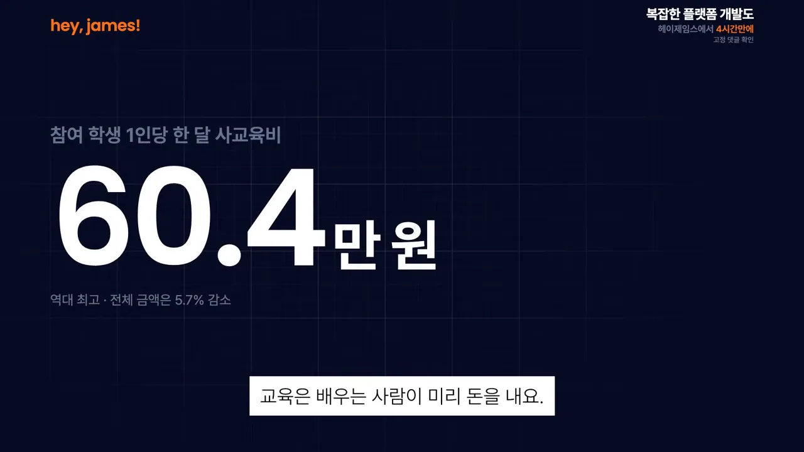
31번은 비개발자를 위한 분야별 바이브코딩 수업이에요. 학원 원장님 반, 쇼핑몰 사장님 반처럼 분야를 좁혀서 가르쳐요. 왜 좁힐까요? 학원 원장님은 출결 관리 화면을, 쇼핑몰 사장님은 주문 정리 화면을 만들고 싶어 하거든요. 수업 시간에 자기 일에 바로 쓸 걸 만들어 가니까 끝까지 듣는 사람이 많아져요.
발표자도 이 아이템으로 직접 수익을 냈어요. 바이브코딩 강의와 수강생 커뮤니티를 운영해 보니, 비개발자 수강생이 예전에 개발자가 몇 달 걸려 만들 법한 서비스를 일주일 만에 만들곤 했대요. 가르치는 사람이 자기 수업에 쓸 도구까지 직접 만들 수 있게 된 거예요. 40번 강의 영상을 요약과 퀴즈로 바꿔 주는 도구도 그렇게 만들 수 있어요.
2주 안에 시험하려면 무료 강의를 한 번 열고, 거기 온 사람에게 유료 소그룹을 제안해 봐요. 그리고 아이 대상 서비스라면 이 화면 하나를 기억하면 돼요.
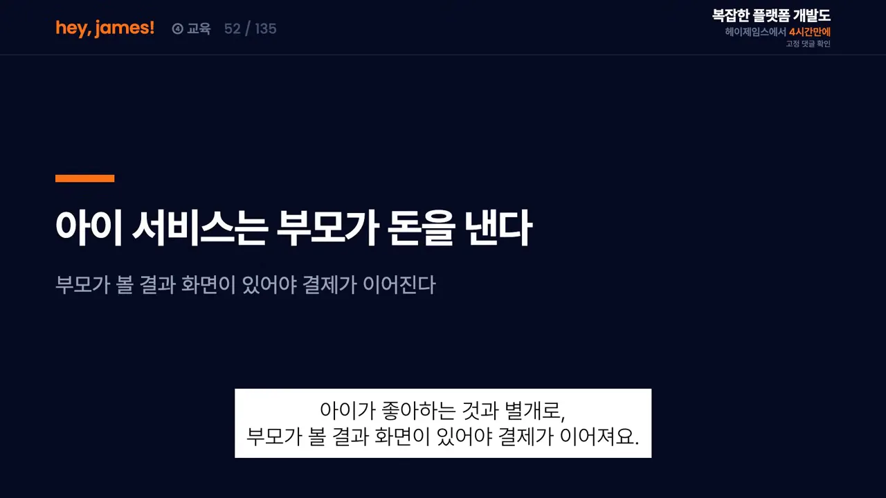
⑤ 크리에이터 도구 (41~50번)
청년 창업 업종 가운데 1년 생존율이 82%였던 분야예요. 화면 아래 작은 글씨처럼 2024년에 미디어 콘텐츠 창작업으로 창업한 청년은 3,496명이었고, 1년 뒤에도 82.1%가 사업을 이어 갔어요.
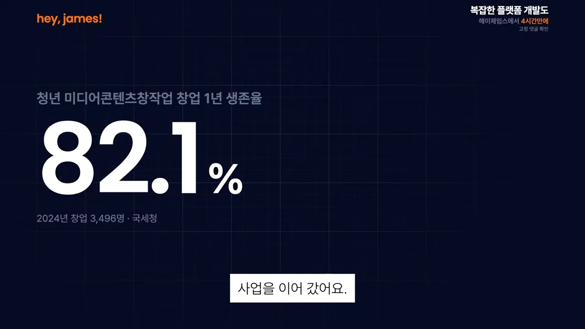
크리에이터는 시간을 아껴 주는 데 돈을 내요. 영상 하나를 올리기까지 기획, 촬영, 편집, 썸네일, 댓글 관리가 다 혼자 몫이거든요. 이 중 하나만 줄여 줘도 매주 쓰는 도구가 돼요. 41번은 내 채널 댓글을 모아서 질문이 몰린 주제, 같은 불만이 반복되는 지점을 묶어 다음 영상 주제를 뽑아 줘요. 44번은 조회수와 시청자 정보를 넣으면 근거가 붙은 협찬 제안서와 단가를 내 줘요. 처음 협찬 제안을 받으면 얼마를 불러야 할지 막막하니까요.
이 묶음은 크리에이터가 직접 만들 때 가장 강해요. 내가 매번 쓰는 도구를 같은 처지의 크리에이터에게 팔고, 내 채널이 곧 첫 홍보 창구가 돼요.
| 번호 | 교육 | 번호 | 크리에이터 도구 |
|---|---|---|---|
| 31 | 비개발자를 위한 분야별 바이브코딩 수업 | 41 | 댓글 분석으로 다음 주제 추천 |
| 32 | 수학 오답노트 AI 튜터 | 42 | 썸네일 비교 결과 분석 |
| 33 | 자격증 기출 분석 | 43 | 블로그·스레드 동시 발행 |
| 34 | 직장인 대상 업무 AI 교육 | 44 | 협찬 단가 계산과 제안서 |
| 35 | 시니어 스마트폰 교실 | 45 | 팟캐스트를 블로그 글로 |
| 36 | 어린이 영어 말하기 AI 친구 | 46 | 웹소설 설정 관리 |
| 37 | 학원 숙제 채점 | 47 | 1인 전자책 출판 |
| 38 | 직군별 면접 연습 | 48 | 라이브 커머스 대본 |
| 39 | 독서 토론 코치 | 49 | 한국어 밈 검색 |
| 40 | 강의 영상을 요약·퀴즈로 | 50 | 크리에이터 정산·세금 관리 |
발로 뛰는 동네 서비스, 빨리 문 닫는 온라인 판매
⑥ 동네·오프라인 서비스 (51~60번)
앱보다 발로 뛰는 쪽이 오래 가는 묶음이에요. 2025년 기준 혼자 사는 가구는 824만으로 전체의 36.6%이고, 화면처럼 2026년에는 65세 이상 인구가 21.6%가 됐어요.
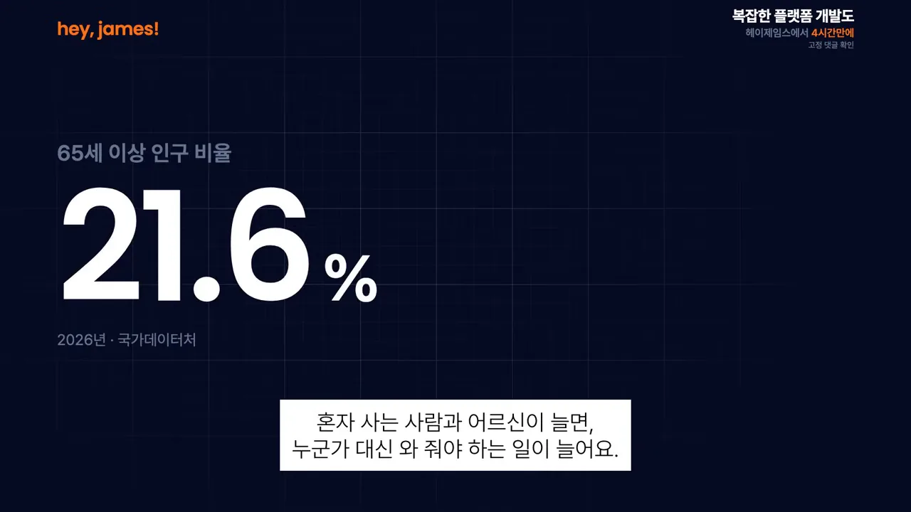
이런 일은 AI가 대신 못 해요. 대신 AI는 예약을 받고, 사람을 배정하고, 정산하는 일을 맡아요. 사람이 움직이는 일은 따라 하기 어려워서, 한 동네에서 먼저 자리를 잡으면 오래 가요.
53번은 어르신의 병원 동행을 도와줄 사람을 이어 주는 서비스예요. 자녀가 회사에 있는 동안 부모님 진료에 같이 가 주는 거죠. 돈을 내는 사람은 어르신이 아니라 자녀인 경우가 많아요. 그래서 화면의 두 칸 중 두 번째, 진료가 끝난 뒤 자녀에게 내용과 사진을 보내는 일이 서비스의 절반이에요.
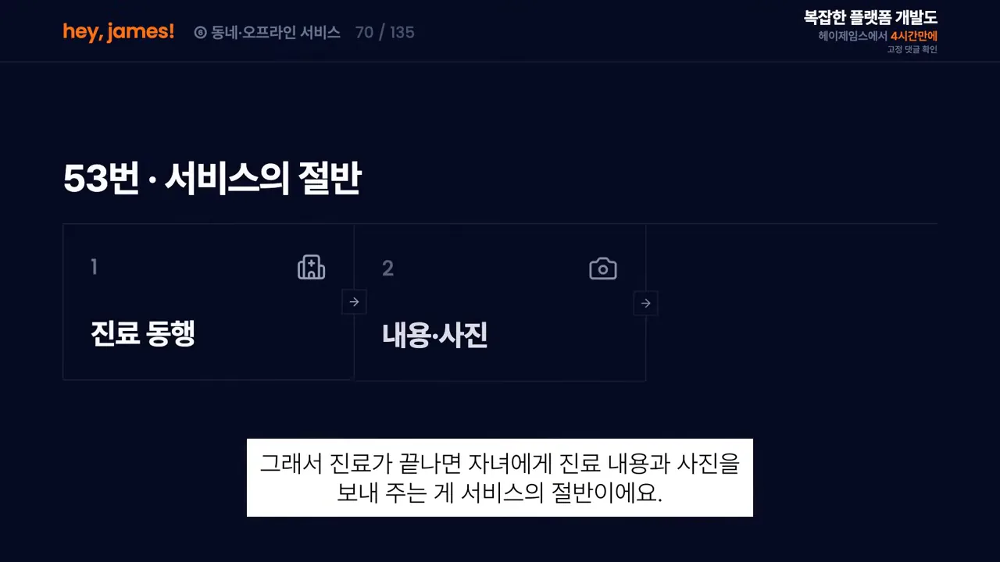
55번은 방마다 사진을 찍어 올리면 짐 양을 가늠해서 이사 견적 범위를 먼저 알려 줘요. 이삿짐 업체를 여러 곳 불러 집을 보여 주는 수고를 줄여 주는 거예요. 시험 방법은 세 칸이에요. 오픈채팅방이나 구글 설문지로 받고, 첫 열 건은 직접 하고, 동네 하나에서 남는 장사인지 먼저 봐요.
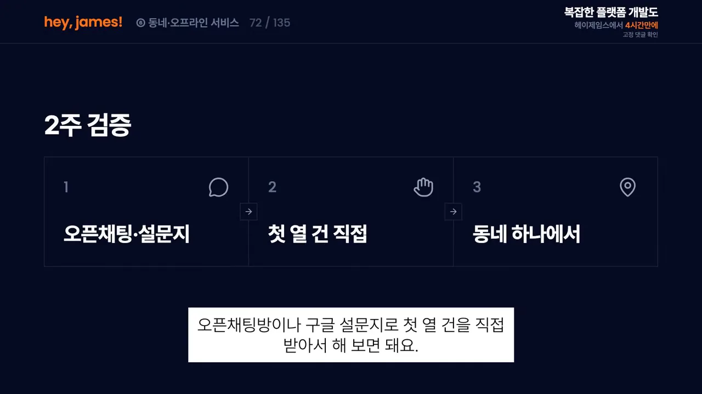
⑦ 온라인 판매 (61~70번)
발표자가 '100개 중 가장 많은 사람이 고르는데 가장 빨리 문을 닫는 묶음'이라고 예고한 게 이거예요. 2025년 온라인쇼핑 거래액은 272조 원으로 시장은 커요. 그런데 3년 생존율 막대를 보면 통신판매업은 45.7%로, 미용실(73.4%)과 교습학원(70.1%)보다 한참 짧아요. 관심 업종 20개 중 꼴찌래요.
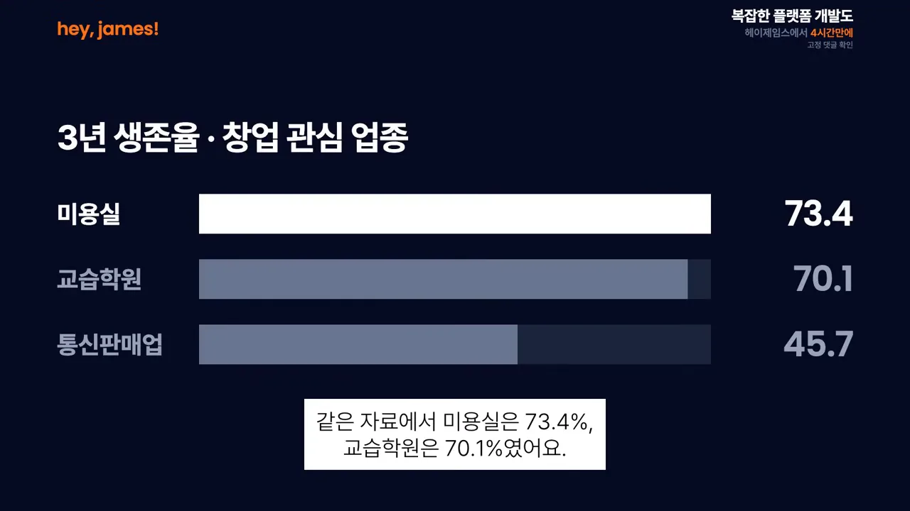
2024년 청년 창업 1위인 전자상거래 소매업에는 8만 2천 명이 뛰어들었는데, 평균 매출은 화면의 1,232만 원이었어요.
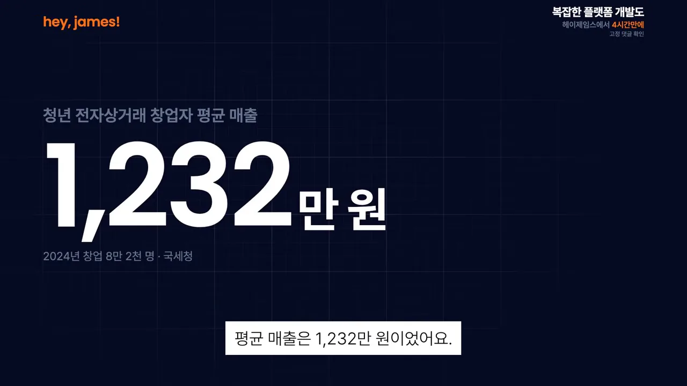
그래서 이 묶음에서는 다음 달에도 다시 사는 구조를 고르라고 해요. 61번 반려동물 맞춤 사료 정기배송이 그런 예예요. 2025년 조사에서 반려동물을 키우는 집은 29.2%로 세 집 중 한 집 가까이 돼요. 사료는 떨어지면 또 사야 하니 정기배송과 잘 맞고, 나이·몸무게·알레르기를 받아 맞춰 고르면 다른 쇼핑몰로 옮길 이유가 줄어요.
65번은 해외에 팔 상품을 번역하고 등록해 주는 자동화 도구예요. 화면처럼 2025년 해외 직접 판매는 3조 234억 원으로 16.4% 늘었어요. 해외에 팔고 싶은 판매자는 상품 설명을 외국어로 다시 쓰고 사진과 가격을 나라별로 맞추는 데서 막혀요.
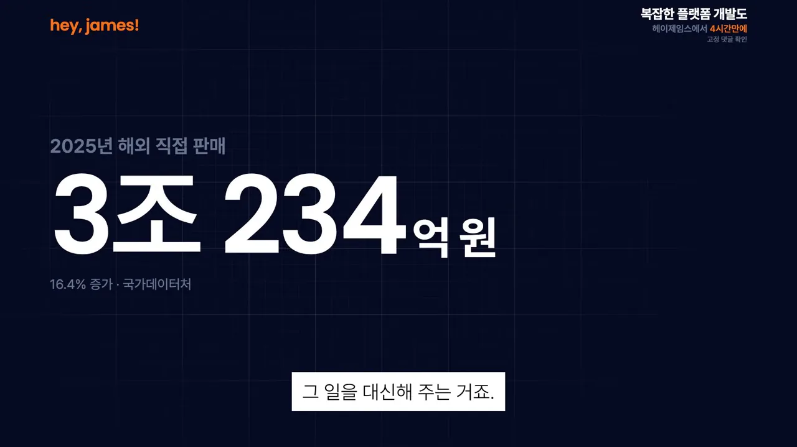
| 번호 | 동네·오프라인 서비스 | 번호 | 온라인 판매 |
|---|---|---|---|
| 51 | 세탁·수선 픽업 | 61 | 반려동물 맞춤 사료 정기배송 |
| 52 | 아파트 공동구매 운영 도구 | 62 | 지역 특산물 구독 |
| 53 | 어르신 병원 동행 | 63 | 1인 가구 소량 밀키트 |
| 54 | 펫시터 매칭 | 64 | 중고 명품 시세 조회 |
| 55 | 사진 몇 장으로 이사 견적 | 65 | 해외 판매 상품 번역·등록 자동화 |
| 56 | 무인매장 운영 관리 | 66 | 아이 옷 대여 구독 |
| 57 | 공유 주방 예약 | 67 | 영양제 맞춤 조합 |
| 58 | 동네 운동 모임 | 68 | 비건 전문몰 |
| 59 | 출장 세차 | 69 | 캠핑 장비 대여 |
| 60 | 정리수납 전문가 예약 | 70 | 굿즈 소량 제작 |
건강, 가족과 생활
⑧ 건강 (71~80번)
돈을 낼 이유가 가장 절실한데, 넘으면 안 되는 선도 가장 분명한 분야예요. 병을 진단하거나 약을 정해 주는 건 의사만 할 수 있어요. 그럼 남는 건 뭘까요? 화면에 밑줄 친 세 단어, 기록·알림·습관이에요.
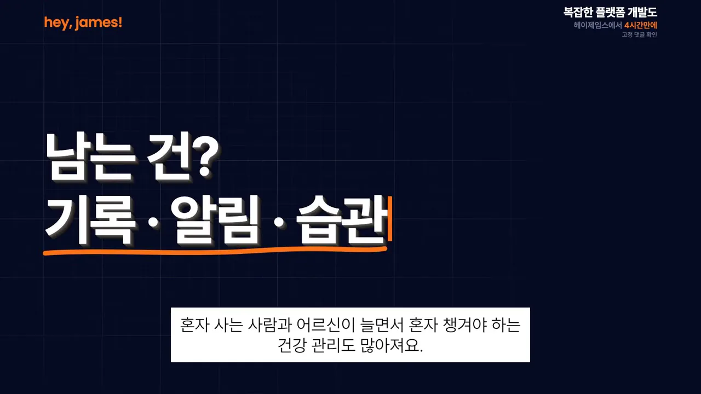
72번은 당뇨 전 단계인 사람을 위한 생활습관 코칭이에요. 식사 사진과 혈당 기록을 받아 매일 짧게 피드백해 줘요. 혼자서는 며칠 하다 멈추는 기록을, 누가 봐 준다는 이유로 계속하게 만드는 서비스예요. 74번은 가족의 검진 결과, 먹는 약, 병원 일정을 한곳에 모아 주는 가족 건강기록이에요. 부모님 병원에 같이 가면 지난번 검사 결과가 어디 있는지 몰라 헤매고, 형제가 여럿이면 누가 언제 모시고 갔는지도 흩어져 있잖아요.
2주 안에 시험하려면 단톡방에서 열 명을 모아 유료로 코칭해 보면 돼요.
⑨ 가족·생활 (81~90번)
아이는 줄었는데 한 아이에게 쓰는 돈은 늘었어요. 화면처럼 2025년 합계출산율은 0.80명이에요. 한편 2025년 하반기 기준 배우자가 있는 가구의 48.6%가 맞벌이고, 30대만 보면 63.3%예요.
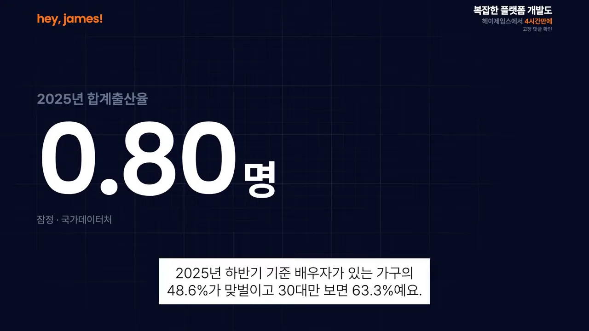
82번은 휴대폰에 쌓인 아이 사진을 골라 성장 앨범을 자동으로 만들어 주는 서비스예요. 한 달에 한 번 잘 나온 사진을 골라 주고, 1년이 지나면 앨범 한 권으로 묶어 줘요. 83번은 어린이집 행사, 병원 예약, 장보기를 누가 맡을지 매번 카톡으로 묻는 대신 한 화면에서 정하는 가족 일정·집안일 분담 도구예요.
주의할 점은 화면의 '파는 것 X / 파는 것 O' 표에 그대로 있어요. 이 분야는 무료 앱이 많아서 앨범 앱을 파는 대신 인쇄한 앨범 한 권을 팔아요.
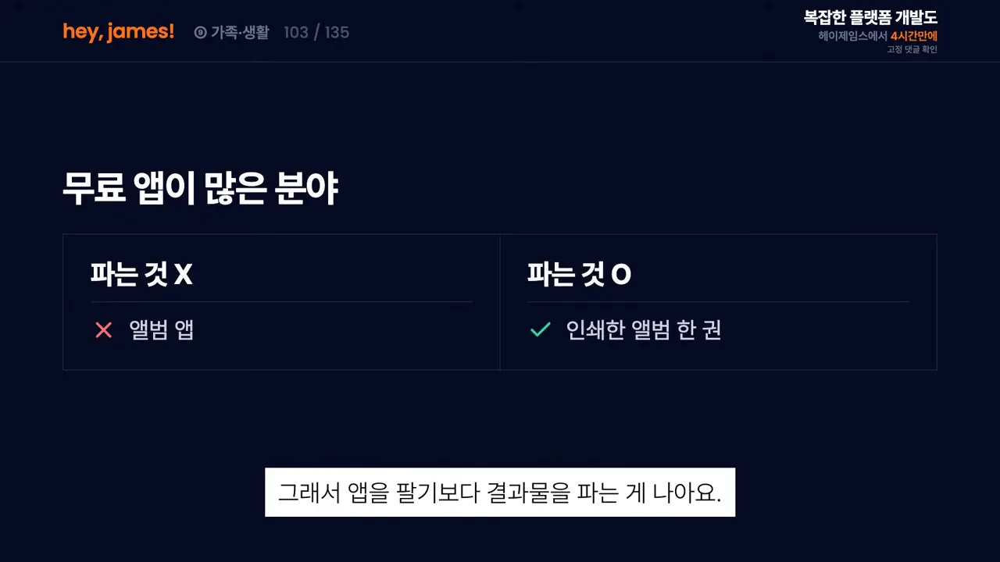
| 번호 | 건강 | 번호 | 가족·생활 |
|---|---|---|---|
| 71 | 식단 사진 기록 | 81 | 다둥이 육아 기록 공유 |
| 72 | 당뇨 전 단계 생활습관 코칭 | 82 | 아이 성장 앨범 자동 제작 |
| 73 | 수면 루틴 코칭 | 83 | 가족 일정·집안일 분담 |
| 74 | 가족 건강기록 | 84 | 해외 거주 한인 생활정보 |
| 75 | 마음건강 일기와 상담 연결 | 85 | 국제학교·유학 비교 |
| 76 | 재활 운동 자세 피드백 | 86 | 결혼 준비 예산 관리 |
| 77 | 갱년기 커뮤니티 | 87 | 부모님 디지털 유산 정리 |
| 78 | 반려동물 건강기록 | 88 | 반려동물 장례 |
| 79 | 거북목 자세 알림 | 89 | 가족 여행 플래너 |
| 80 | 영양제 복용 관리 | 90 | 아이 용돈 교육 |
사람이 모여야 돈이 되는 플랫폼
마지막 묶음은 가장 멋져 보이는데, 돈이 들어오기까지 가장 오래 걸려요. 화면의 두 칸이 이유예요. 파는 사람은 사는 사람이 없으면 떠나고, 사는 사람은 파는 사람이 없으면 안 와요. 둘 다 있어야 첫 거래가 일어나요.
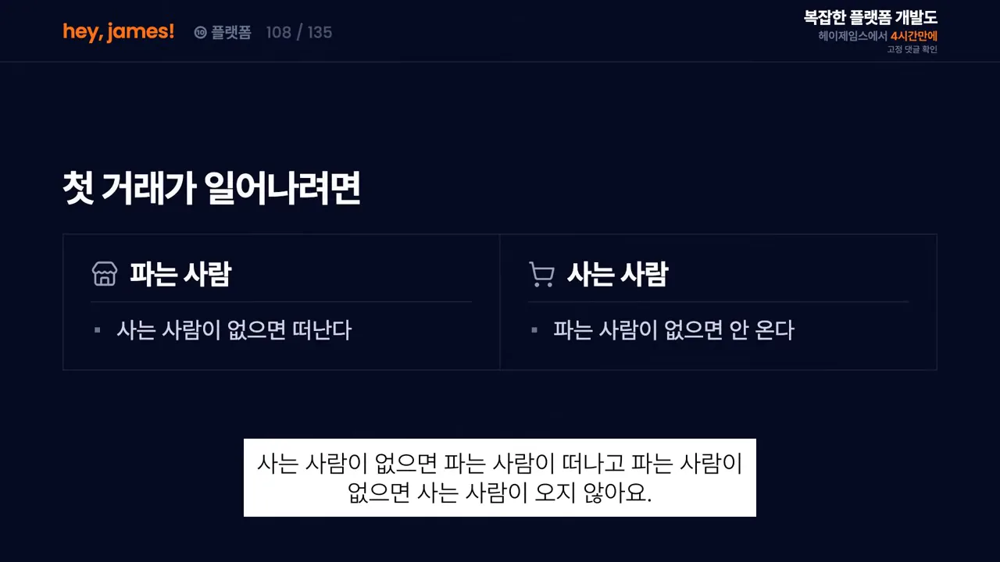
발표자는 처음 아이템을 고를 때 가장 흔한 실수가 플랫폼이나 커뮤니티부터 만드는 거라고 봐요. 큰 자본과 오랜 시간을 버틸 수 있는 게 아니라면, 사람이 모이기 전에 돈이 먼저 떨어지니까요. 근거로 든 게 자기 경험이에요. 개발 에이전시 시절 수백 개 스타트업의 플랫폼을 만들었는데, 화면처럼 1% 정도만 남았대요.
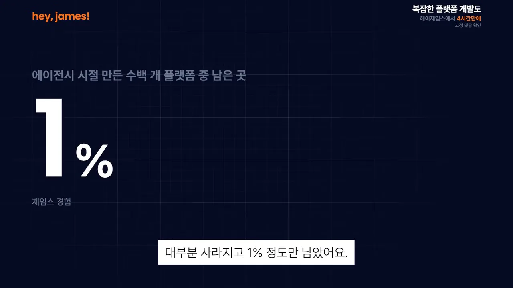
살아남은 쪽과 사라진 쪽을 가른 건 시작할 때 쓴 돈이었어요. 왼쪽 '사라진 쪽'은 처음부터 외주에 수천만 원을 썼고, 오른쪽 '남은 쪽'은 몇백만 원으로 최소 버전을 만들어 서비스하면서 키웠어요.
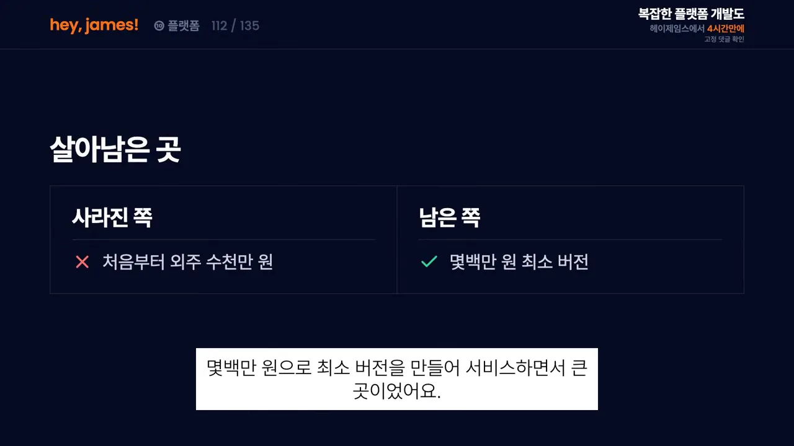
그럼 플랫폼을 하고 싶은 사람은 어떻게 시작할까요? 한쪽부터 서비스로 팔아요. 99번 분 단위 전문가 상담이라면, 전문가 한 명의 상담을 내가 먼저 팔아 보는 거예요. 91번 특정 직군 구인구직도 내가 아는 직군의 공고 몇 개를 직접 이어 주는 데서 시작할 수 있어요. 나머지 여덟 개도 처음엔 내가 한쪽 역할을 맡으면 되고, 거래가 손으로 감당이 안 될 만큼 늘었을 때 플랫폼을 만들어도 늦지 않아요.
| 번호 | 플랫폼 | 번호 | 플랫폼 |
|---|---|---|---|
| 91 | 특정 직군 구인구직 | 96 | 취미 클래스 중개 |
| 92 | 사이드 프로젝트 팀원 매칭 | 97 | 중소 제조사와 디자이너 매칭 |
| 93 | 1인 창업자 수익 공개 커뮤니티 | 98 | 농가 체험 예약 |
| 94 | 은퇴자 경력 매칭 | 99 | 분 단위 전문가 상담 |
| 95 | 외국인 한국 정착 지원 | 100 | 지원사업 사업계획서 공유 |
하나를 고르는 기준 세 가지와 2주 시험
100개를 다 본 뒤 발표자는 고르는 기준 세 가지를 줘요. 현금이 들어오는 속도, 내가 겪은 문제, 그리고 숫자로 먼저 계산하기예요.
| 기준 | 무슨 뜻인가요 | 왜 그런가요 |
|---|---|---|
| ① 앞 번호일수록 첫 결제가 빨라요 | 1~30번은 사장님·회사·전문가가 돈을 내요 | 고객 한 명만 설득해도 다음 달 돈이 들어와요 |
| ② 직접 겪은 불편을 골라요 | 일하거나 살면서 겪은 문제를 아이템으로 삼아요 | 무엇이 불편한지 이미 알아서 고객 인터뷰를 수십 번 안 해도 돼요 |
| ③ 만들기 전에 계산해요 | 아주 잘돼도 월 500만 원이 안 나오면 다른 아이템을 골라요 | 계산은 '한 달 가격 × 고객 수' 한 줄이면 돼요 |
계산은 한 줄이면 돼요
영상의 예시는 리뷰 답글 AI예요. 화면의 세 칸을 왼쪽부터 읽으면, 한 달 3만 원에 팔 때 170곳이 계속 쓰면 한 달 매출이 510만 원이에요. 동네 사장님 170분을 모을 수 있을까요? 모을 수 있으면 시작하고, 어려우면 가격을 올리거나 다른 아이템을 골라요.
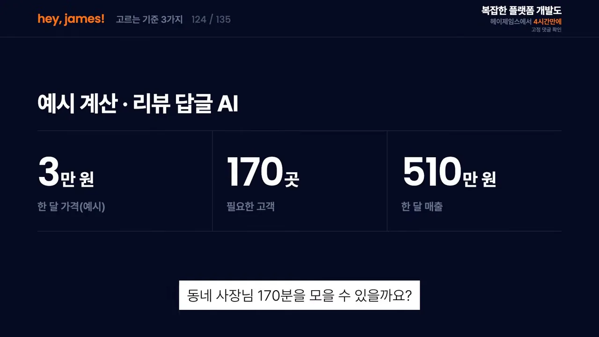
가격을 바꾸면 모아야 할 고객 수가 얼마나 달라지는지 직접 움직여 볼 수 있어요. 목표는 영상이 말한 월 500만 원으로 고정했어요.
월 500만 원에 필요한 고객 0명
지금 한 달 매출 0만 원
- 가격 3만 원, 고객 170명에 맞춰 보세요. 영상 화면처럼 510만 원이 나와요.
- 고객을 2주 시험의 목표인 10명에 두고 가격을 올려 보세요. 열 명만으로 500만 원을 넘기려면 50만 원이 필요해서 슬라이더 끝까지 가도 겨우 닿아요.
- 가격을 10만 원으로 올려 보세요. 필요한 고객이 50명으로 줄어요. 영상이 말한 '가격을 올리거나'가 이 뜻이에요.
2주는 이렇게 나눠요
화면의 세 칸이 일정이에요. 1주차에는 만들지 말고 손으로 해 드려요. 리뷰 답글이라면 사장님 열 분의 답글을 직접 써 드리고 한 달 값을 받아요. 2주차에는 그중 시간이 가장 많이 드는 한 가지만 AI로 자동화해요. 14일째에는 세 가지를 확인해요.
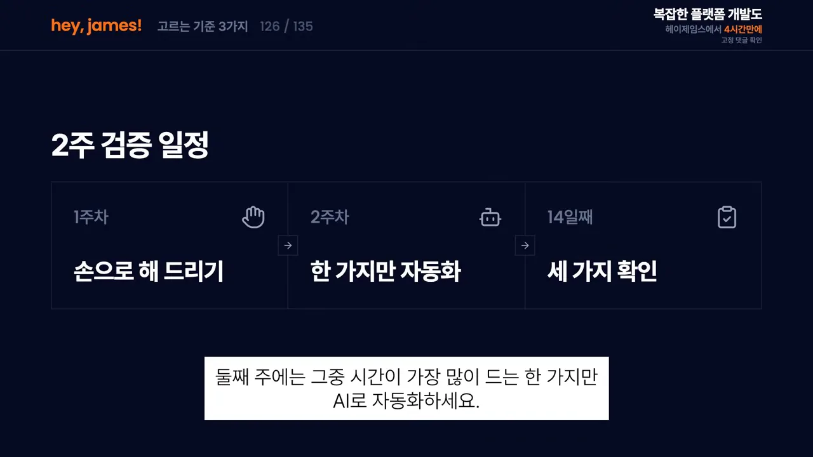
14일째 확인할 것은 오른쪽 체크박스 세 개예요. 돈을 낸 분이 몇 분인지, 다음 달에도 쓸 분이 몇 분인지, 내가 쓴 시간이 얼마인지요.
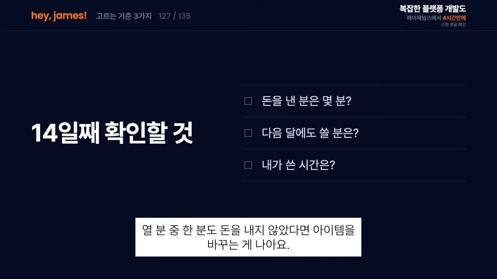
시험할 돈은 정부 지원금으로도
고객 돈 말고 정부 돈으로 시작하는 길도 있어요. 중소벤처기업부의 '모두의 창업' 2차 모집에는 9만 3천여 명이 신청했어요. 화면의 세 칸이 단계별 지원이에요. 1라운드에 뽑힌 1만 명은 활동자금 200만 원과 AI 솔루션을 받고, 2라운드 일반·기술 분야 1,000명은 최소 버전을 만드는 데 최대 2천만 원을 받아요. 마지막 칸은 200명 중 상위 10명을 가리는 단계예요.
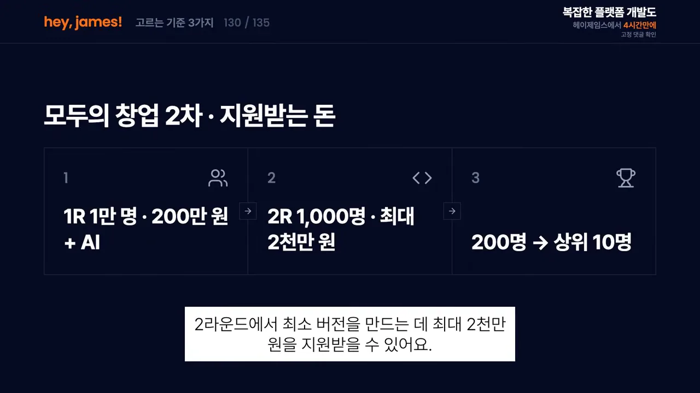
발표자도 지원금으로 창업했어요. 그 아이템은 실패했지만 지원금 덕분에 빚을 지지 않아서, 그 뒤에 에이전시로 성공할 수 있었대요. 마지막 당부는 짧아요. 어느 쪽을 고르든 사장님 열 분, 동료 열 명에게 손으로 먼저 해 드리고 2주 안에 첫 결제를 받아 보라는 거예요.